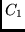
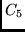
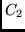
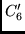
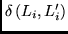

This library contains 20 routines for calculation of recoupling matrices
DLSA1 Evaluates the coefficients  (see (15) P2 [4]).
DLSA2 Evaluates the coefficients  (see (16) P2 [4]).
DLSA3 Evaluates the coefficients  (see (23) P2 [4]).
DLSA4 Evaluates the coefficients (see (21) P2 [4]).
DLSA5 Evaluates the coefficients (see (17) P2 [4]).
DLSA6 Evaluates the coefficients
 (see (25) P2 [4]).
RECOUP0 Checks the angular momentu selection rules
for the recoupling coefficients. For example it uses the
expression (18) in one interacting shell case (see P2 [4]).
RECOUP2 Checks or calculates the recoupling coefficients for
the scalar operator which has the tensorial structure
RECOUP3 Checks or calculates the recoupling coefficients for
the scalar operator:
RECOUP31 Aids RECOUP3 in calculating the recoupling matrix
in the case of three interacting shells.
RECOUP4 Checks or calculates the recoupling coefficients for
the the operator:
RLSP0 Checks for delta-functions
 for one and two interacting shell
(see (14) and (19) in P2 [4]).
for one and two interacting shell
(see (14) and (19) in P2 [4]).
RLSP00 Checks for delta-functions

for three and four interacting shell
(see (24) and (27) in P2 [4]).
RLSP1 Checks or calculates the recoupling coefficients for
the operator which has the tensorial structure
RLSP2 Checks or calculates the recoupling coefficients for
the operator which has the tensorial structure
RLSP3
Checks or calculates the recoupling coefficients for
the operator:
RLSP31 is needed by RLSP2.
RLSP32 is needed by RLSP2.
RLSP4a Checks or calculates one part of the recoupling coefficients for
the operator:
RLSP4b Checks or calculates other parts of the recoupling coefficients for
the operator (28).
![$\displaystyle \left[ \left[ A^{(k_1)} \left( n_{i}l_{i} \right) \times B^{(k_2)...
...\right) \right] ^{(k)} \times C^{(k)} \left( n_{m}l_{m} \right)
\right] ^{(0)}.$](img73.png)